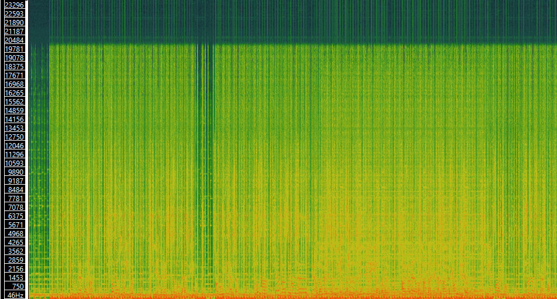
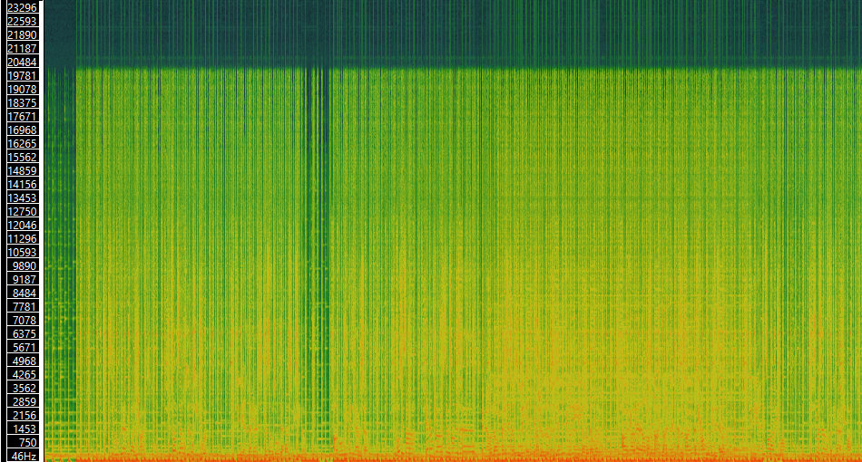
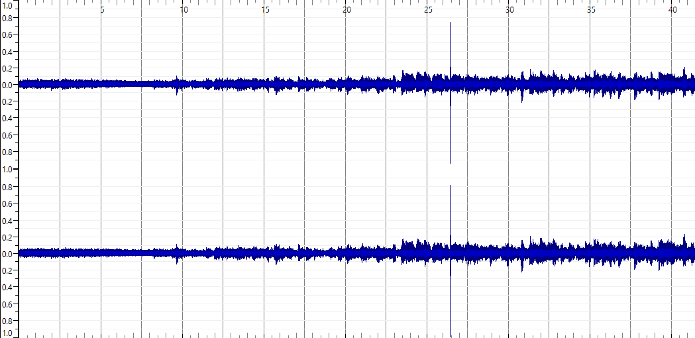
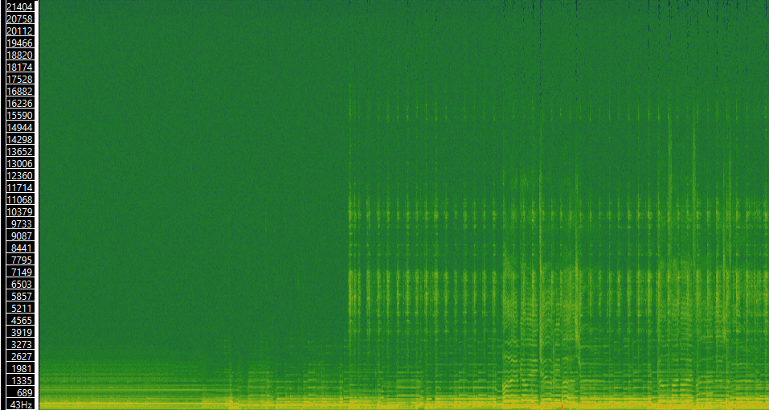
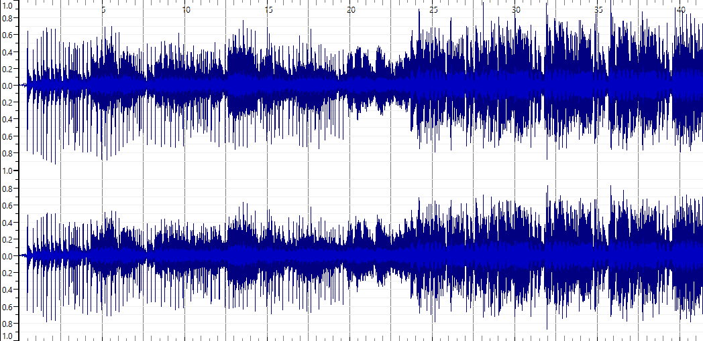
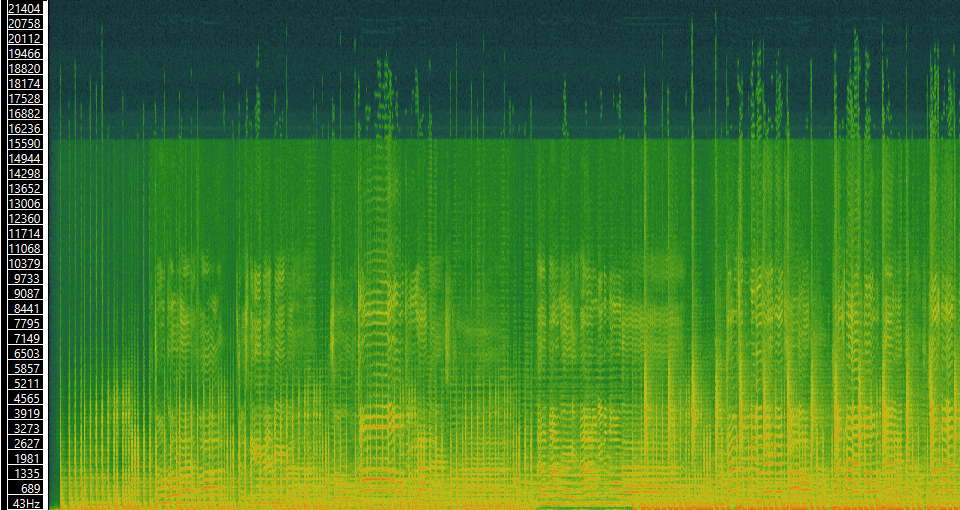

The three tracks selected were chosen due to their differences stylistically to one another as well as their similarities to many of the genres touched upon by David Bowie.
| Title | Artist | Composer | Copyright Info | Genre | Source | File/Audio Format | Number of Channels | Sample Rate | Bit per Second | Duration |
| Bellwether | Manwomanchild | Manwomanchild | CC-BY-NC 4.0 | Rock/Psych-Folk/Psych-Rock | Free Music Archive | .mp3 | 2 | 48000Hz | 32000Hz | 03:08 |
| Part4 | Hall of Fame | Hall of Fame | CC-BY-NC-ND 3.0 | Folk/Psych-Rock | Free Music Archive | .mp3 | 2 | 44100Hz | 25600 | 03:12 |
| Fugue7 | TransFX | TransFX | CC-BY-NC-ND 4.0 | Synth Pop | Free Music Archive | .mp3 | 2 | 44100Hz | 32000 | 03:34 |
Bellwether - Manwomanchild
 

Part4 - Hall of Fame
 Fugue7 - TransFX
 An advantage that a time-frequency analysis has over a waveform-based analysis is that when a song is converted into a time-frequency you are able to see features in a much more distinctive manner than you are with a waveform-based analysis. Certain features such as new instruments or changes in harmonies can be seen more clearer within a spectogram than a waveform. For example, on the song 'Fugue7' the moments within the song that feature vocals are more distinctively visible within the spectogram than other the waveform.